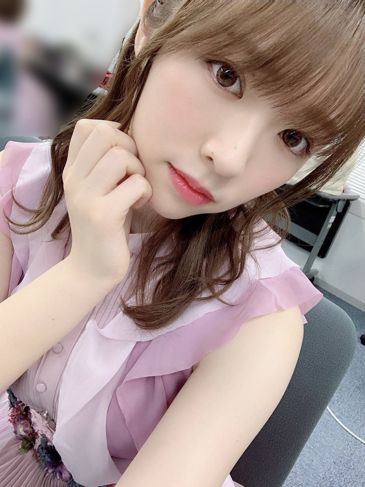
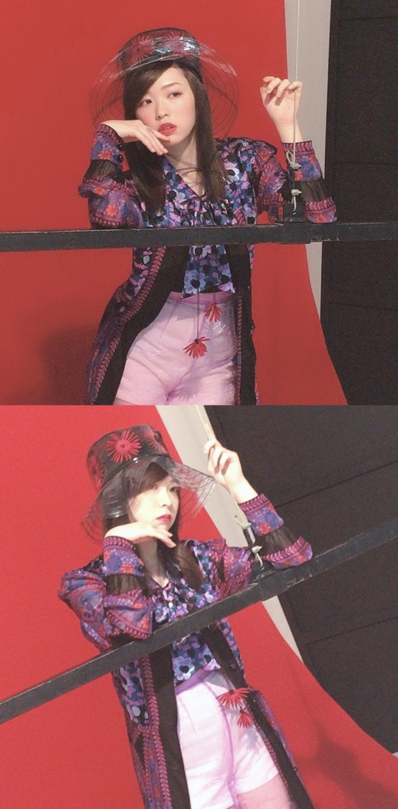
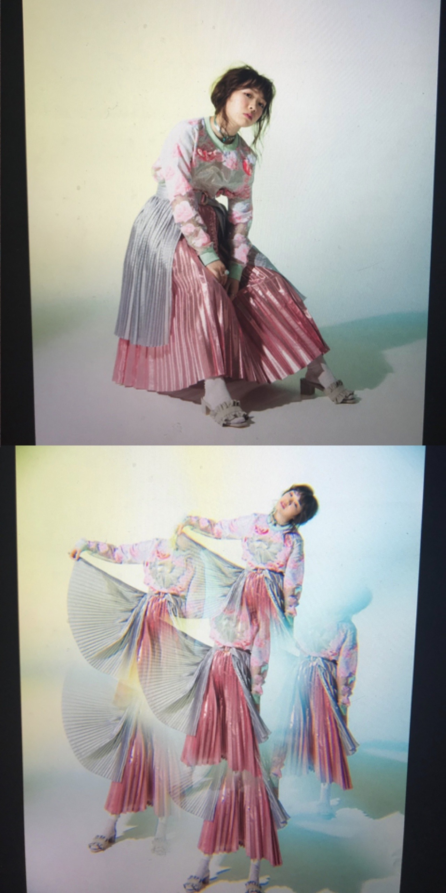

2019/0628Fri紫林檎
テレ東音楽祭、ありがとうございました！
ご視聴頂いた皆様、乃木坂ちゃんは見れましたか？
トークにも参加させていただき
初の体験だったので凄く緊張したと共に、
物凄く嬉しかったです。

この衣装のベルトにドライフラワーが
装飾されていまして、
花好きの私にとっては物凄くお気に入りの衣装です！
踊ってるのが何よりの発散だし
楽しくて本当に幸せな時間、、
見てくださった皆様、ありがとうございました！
OVERTURE、発売中です！

私のやりたい事を存分に叶えて下さいました、、
世界観バッチしでございます
撮影も凄い楽しかった！

好きな事のページでは大好きな小説、
ジャイアンツ、匂いフェチの3つについて
存分に語らせて頂きました。
好きな事を誰かに話すってこんなに清々しいのね、
とそのインタビュー時初めて思いました。
インタビューではなんと、、
Seishiroさんにお話をお伺いする事が
現実となりました。
私の事について沢山お話してくれていて
見て凄く感動しました。
メンバー全体の事、ダンスの事、
Seishiroさん自身の事、沢山詰まってる
インタビューになっております！
是非、見て下さると嬉しいです。
みり愛
2019/06/28 20:30
コメント(344)
雑誌チェックするね！！！
かわいい！
6月30日ビックサイト行きます！
みり愛ちゃんとの握手初めてなのでかなり緊張してます笑
｢そうま｣って書いた名札して行くからよろしくね！！
みり愛ちゃんとの握手初めてなのでかなり緊張してます笑
｢そうま｣って書いた名札して行くからよろしくね！！
みり愛ちゃん！ブログありがとう！！30日の個握楽しみにしてます！！！
テレ東音楽祭みたよー＾＾
ほんとダンスキレッキレだよねー＾＾
最後に一言だけ
ほんとかわいいね＾＾
ほんとダンスキレッキレだよねー＾＾
最後に一言だけ
ほんとかわいいね＾＾
なんか凄い衣装だね( ﾟдﾟ)
OVERTURE買うね
音楽番組見る度みり愛ちゃんがいるから、嬉しい
体調に気をつけて頑張ってね！
OVERTURE買うね
音楽番組見る度みり愛ちゃんがいるから、嬉しい
体調に気をつけて頑張ってね！
ブログ更新ありがとう～
来週の京都行くからそのときにOVERTUREの感想伝えれるようにするね～
来週の京都行くからそのときにOVERTUREの感想伝えれるようにするね～
みり愛が沢山テレビに出ていたり、歌番組などで抜かれることが増えたり本当に幸せです！
そんなみり愛に毎日癒やされ勇気をもらってます！
これからも熱くなりますが体調に気をつけてください♡
ずっと応援しています！大好きです♡
そんなみり愛に毎日癒やされ勇気をもらってます！
これからも熱くなりますが体調に気をつけてください♡
ずっと応援しています！大好きです♡
みり愛ちゃんブログありがとー！テレ東音楽祭司会の後ろにいるの可愛かった！世界観いいね〜^_^
テレ東音楽祭お疲れさま。
乃木坂ちゃん見れました。
みり愛ちゃん探してました。
装飾のついたベルトお花好きみり愛ちゃん似合ってまぁーす。乃木坂工事中でも目立って欲しいー頑張れお花好きみり愛ちゃんファイト頑張れ
乃木坂ちゃん見れました。
みり愛ちゃん探してました。
装飾のついたベルトお花好きみり愛ちゃん似合ってまぁーす。乃木坂工事中でも目立って欲しいー頑張れお花好きみり愛ちゃんファイト頑張れ
みり愛たーーーん、ああ、可愛いなあ(｡>﹏<｡)♡♡♡♡♡
お疲れ様でした
花のベルトは本当に可愛いよね
2枚めの写真のみり愛のストレートはめちゃ珍しくない？凄く見慣れ感がないので。
でもみり愛はやっぱりなんでも似合うよね(*´ω｀*)
早く雑誌を見たい、見なきゃ
これからも頑張って(/･ω･)/
お疲れ様でした
花のベルトは本当に可愛いよね
2枚めの写真のみり愛のストレートはめちゃ珍しくない？凄く見慣れ感がないので。
でもみり愛はやっぱりなんでも似合うよね(*´ω｀*)
早く雑誌を見たい、見なきゃ
これからも頑張って(/･ω･)/
可愛すぎて倒れちまう
みり愛〜可愛い
みり愛ちゃんブログ更新ありがとう！
みり愛ちゃん推しなのにまだoverture見れてないです。
明日必ず買います！！！
もう少しで全国ツアーも始まるけど楽しく体調には気をつけて頑張ってね！！
大阪と神宮見に行くね〜♪
みり愛ちゃん推しなのにまだoverture見れてないです。
明日必ず買います！！！
もう少しで全国ツアーも始まるけど楽しく体調には気をつけて頑張ってね！！
大阪と神宮見に行くね〜♪
みり愛ブログ更新ありがと〜。
テレ東音楽祭お疲れ様でした！こっちはみれないけど…ネットに回ってた画像で楽しみました。笑
みり愛がこんなに活躍してくれて本当に嬉しいし偉そうかもしれないけど何だか誇らしいし自慢の推しメンです！本当にありがとう！
OVERTUREも本屋さん3店舗くらい回ってようやく見つけれて買ったけど読み応え抜群で心の底から買って良かったって思える雑誌やったよ！みり愛のことを更によく知れた気がするし、これからの目標？夢？みたいのものも知れてよかったよ〜。あの衣装であの世界観でもめちゃくちゃ似合ってて綺麗だしもっと色んなみり愛をみてみたいな〜って思った！可愛い画像をありがとう！
握手会も頑張ってねー！ナゴヤドームの全ツ楽しみにしてるね！
テレ東音楽祭お疲れ様でした！こっちはみれないけど…ネットに回ってた画像で楽しみました。笑
みり愛がこんなに活躍してくれて本当に嬉しいし偉そうかもしれないけど何だか誇らしいし自慢の推しメンです！本当にありがとう！
OVERTUREも本屋さん3店舗くらい回ってようやく見つけれて買ったけど読み応え抜群で心の底から買って良かったって思える雑誌やったよ！みり愛のことを更によく知れた気がするし、これからの目標？夢？みたいのものも知れてよかったよ〜。あの衣装であの世界観でもめちゃくちゃ似合ってて綺麗だしもっと色んなみり愛をみてみたいな〜って思った！可愛い画像をありがとう！
握手会も頑張ってねー！ナゴヤドームの全ツ楽しみにしてるね！
18時代も出演するって知らんくて、見れんかったとです、、、
みり愛ちゃん、こんばんは。
正直、この頃ね、追い切れてません…。
たぶん今のみり愛ちゃん、側から見る分には
活動がとても充実してて雑誌テレビ等々、
結構な露出があって、
推しとしては嬉しい限りなんですが、
自分のタイミングが合わなくて、
せっかくのみり愛ちゃんの活躍を
全然追い切れず、雑誌も買えてないし、
テレビも見逃しまくって、
ほとんど何にも見れてません…。
マジで乃木中くらいしか見れてない。
ただ幸いにも乃木中が2期生特集だったから、
みり愛ちゃんがたくさん映ってありがたかった！
いかんねー、こんな事じゃ。
全ツは名古屋には両日行きますが、
今のところ、神宮全落ちだし。
今週末の東京個握はみり愛ちゃんの握手券、
宮城に引き続き1枚のみしか取れてないし…。
まぁ、その後の京都個握は
それなりに確保出来たけどね。
これからちょっと落ち着いたら
改めてあれこれ探して見てみようと思います。
モバメとかのオフショットなんか見る限り、
現実に大人になった分と、選抜に入った分からなのか、
明らかに最近のみり愛ちゃんには変化を感じてるんで、
ちょっと前とは明らかに違う、一段上がった世界感で
表現がされているんじゃないかと…。
それは見たいんですよね。
今は見逃してますが…。
あ、長くなっちゃった。
ごめんなさい。
これから梅雨だったり夏だったり、
体調には気をつけて頑張ってくださいね！
ではでは
正直、この頃ね、追い切れてません…。
たぶん今のみり愛ちゃん、側から見る分には
活動がとても充実してて雑誌テレビ等々、
結構な露出があって、
推しとしては嬉しい限りなんですが、
自分のタイミングが合わなくて、
せっかくのみり愛ちゃんの活躍を
全然追い切れず、雑誌も買えてないし、
テレビも見逃しまくって、
ほとんど何にも見れてません…。
マジで乃木中くらいしか見れてない。
ただ幸いにも乃木中が2期生特集だったから、
みり愛ちゃんがたくさん映ってありがたかった！
いかんねー、こんな事じゃ。
全ツは名古屋には両日行きますが、
今のところ、神宮全落ちだし。
今週末の東京個握はみり愛ちゃんの握手券、
宮城に引き続き1枚のみしか取れてないし…。
まぁ、その後の京都個握は
それなりに確保出来たけどね。
これからちょっと落ち着いたら
改めてあれこれ探して見てみようと思います。
モバメとかのオフショットなんか見る限り、
現実に大人になった分と、選抜に入った分からなのか、
明らかに最近のみり愛ちゃんには変化を感じてるんで、
ちょっと前とは明らかに違う、一段上がった世界感で
表現がされているんじゃないかと…。
それは見たいんですよね。
今は見逃してますが…。
あ、長くなっちゃった。
ごめんなさい。
これから梅雨だったり夏だったり、
体調には気をつけて頑張ってくださいね！
ではでは
ブログ更新ありがとう！
雑誌にテレビみたよ！めっちゃ可愛かったしダンスかっこよかったよ！トークも最高だった！！
雑誌にテレビみたよ！めっちゃ可愛かったしダンスかっこよかったよ！トークも最高だった！！
ブログ更新ありがとう
テレ東音楽祭お疲れ様！
みり愛が選抜で自分のポジションで踊ってるとこ見れて良かった！
こういうのを気に世間にもっとみり愛が認知されて行くと嬉しいよね！
6/30個握行くから！
たくさん話そうね！
テレ東音楽祭お疲れ様！
みり愛が選抜で自分のポジションで踊ってるとこ見れて良かった！
こういうのを気に世間にもっとみり愛が認知されて行くと嬉しいよね！
6/30個握行くから！
たくさん話そうね！
みり愛ちゃーん ブログ更新ありがとうー
テレ東音楽祭の衣装、ドライフラワーがついてるんだね 笑 なんかすごいなぁ〜 CMの前のカメラがみり愛ちゃんに寄ってたところ、可愛くてよかったです！ そして何よりみり愛ちゃんのダンス、しなやかで素敵でしたよ〜 色んなところでみり愛ちゃんのご活躍が見れて幸せです！
overture の世界観は普段のみり愛ちゃんとはまた違った雰囲気で良かったよ〜 インタビューもみり愛ちゃんが好きな事について沢山書かれていて読んでて楽しい！ また色んなところでみり愛のことを見れるのを楽しみにしております！
いつもモバメもありがとうー
忙しいと思うけど体調に気を付けて〜 応援してます！
テレ東音楽祭の衣装、ドライフラワーがついてるんだね 笑 なんかすごいなぁ〜 CMの前のカメラがみり愛ちゃんに寄ってたところ、可愛くてよかったです！ そして何よりみり愛ちゃんのダンス、しなやかで素敵でしたよ〜 色んなところでみり愛ちゃんのご活躍が見れて幸せです！
overture の世界観は普段のみり愛ちゃんとはまた違った雰囲気で良かったよ〜 インタビューもみり愛ちゃんが好きな事について沢山書かれていて読んでて楽しい！ また色んなところでみり愛のことを見れるのを楽しみにしております！
いつもモバメもありがとうー
忙しいと思うけど体調に気を付けて〜 応援してます！
テレ東音楽祭見ましたよー
まさかのひな壇！しかも国分さんの後ろで映りまくり！！
みりあたんびーむ笑 も最高でした(^ ^)
はー幸せな時間だったなあ。
みり愛ちゃんが映ってる所は全部残して編集しますね！
OVERTUREも買って読ませて頂きました〜
あーやっぱりこういうの好きなんだなあって感じで
とても素敵なみり愛ちゃんが見られて良かったです！
Seishiroさんのインタビュー
ご家族からのコメントも凄く良かったな
(にーにと呼んでもらいたい)
いっぱいみり愛ちゃんの事を知ることが出来て
OVERTUREさんには感謝です！
でも、もっともっと知りたいし
もっともっと話がしたいなと思った！
日曜日の握手会がとても楽しみです(^ ^)
まさかのひな壇！しかも国分さんの後ろで映りまくり！！
みりあたんびーむ笑 も最高でした(^ ^)
はー幸せな時間だったなあ。
みり愛ちゃんが映ってる所は全部残して編集しますね！
OVERTUREも買って読ませて頂きました〜
あーやっぱりこういうの好きなんだなあって感じで
とても素敵なみり愛ちゃんが見られて良かったです！
Seishiroさんのインタビュー
ご家族からのコメントも凄く良かったな
(にーにと呼んでもらいたい)
いっぱいみり愛ちゃんの事を知ることが出来て
OVERTUREさんには感謝です！
でも、もっともっと知りたいし
もっともっと話がしたいなと思った！
日曜日の握手会がとても楽しみです(^ ^)
テレ東音楽祭見ました！いつ見ても可愛くてダンスも最高です‼ちなみに自分はタイガースです‼
みり愛ちゃんブログ更新ありがとう
テレ東ずっと見てましたよ～
MC席の真上に居てめちゃくちゃ嬉しかったし
カメラさんに抜かれる事も多くて嬉しかったです！
sing outも見る度みり愛ちゃんのダンスだなぁって
思えてどんどん好きになってますっ
overture最高過ぎました。
どの写真も好きだし
インタビューも読めば読むほど好きで
凄い好きです。
明後日の握手会で、
色々話したいなぁって思ってます！！
久々の握手会なので凄い楽しみです。
これからもずっと応援してます！
みり愛ちゃんらしく頑張ってねっ
体調崩さないように全ツも楽しんでね
テレ東ずっと見てましたよ～
MC席の真上に居てめちゃくちゃ嬉しかったし
カメラさんに抜かれる事も多くて嬉しかったです！
sing outも見る度みり愛ちゃんのダンスだなぁって
思えてどんどん好きになってますっ
overture最高過ぎました。
どの写真も好きだし
インタビューも読めば読むほど好きで
凄い好きです。
明後日の握手会で、
色々話したいなぁって思ってます！！
久々の握手会なので凄い楽しみです。
これからもずっと応援してます！
みり愛ちゃんらしく頑張ってねっ
体調崩さないように全ツも楽しんでね
みり愛ちゃんブログ更新ありがとう！
テレ東音楽祭見たよー！！パフォーマンスしっかり目に焼き付けたよ！！
CMフリのピースめっちゃ可愛かった！！笑
OVERTUREも見たよ！世界観がみり愛ちゃんに合ってた気がした！
俺は阪神ファンやけど笑笑
ついにツアー始まるね！まずは名古屋2日間行くから楽しもう！！
そのあと京都の個別握手会もいくんでよろしくお願いします！
体調に気をつけて頑張ってね！応援してます。
テレ東音楽祭見たよー！！パフォーマンスしっかり目に焼き付けたよ！！
CMフリのピースめっちゃ可愛かった！！笑
OVERTUREも見たよ！世界観がみり愛ちゃんに合ってた気がした！
俺は阪神ファンやけど笑笑
ついにツアー始まるね！まずは名古屋2日間行くから楽しもう！！
そのあと京都の個別握手会もいくんでよろしくお願いします！
体調に気をつけて頑張ってね！応援してます。
こんばんは。ブログ更新ありがとうございます。
テレ東音楽祭、見ましたよ～。司会の後ろで、みり愛ちゃんばっちり映ってましたね！！これがきっかけでみり愛ちゃん推しになる人もきっとたくさんいると思います。
OVERTURE、発注しました。今はもうすっかりアイドルと言えば坂道シリーズと言われるようになりましたが、みんなで頑張ってきた結果です。誇りに思って良いと思います。
ではまた。
テレ東音楽祭、見ましたよ～。司会の後ろで、みり愛ちゃんばっちり映ってましたね！！これがきっかけでみり愛ちゃん推しになる人もきっとたくさんいると思います。
OVERTURE、発注しました。今はもうすっかりアイドルと言えば坂道シリーズと言われるようになりましたが、みんなで頑張ってきた結果です。誇りに思って良いと思います。
ではまた。
みりあちゃんブログ更新ありがとう！
テレ東音楽祭お疲れ様！
テレ東音楽祭見てたよ！
みりあちゃんの姿ちゃんと見つけたよ！
SingOUTもめっちゃ良かった！
乃木坂が出るからには見なきゃね！
Overture楽しみだよ！
またコメントします！
テレ東音楽祭お疲れ様！
テレ東音楽祭見てたよ！
みりあちゃんの姿ちゃんと見つけたよ！
SingOUTもめっちゃ良かった！
乃木坂が出るからには見なきゃね！
Overture楽しみだよ！
またコメントします！
ブログ更新ありがとう！！！
テレ東音楽祭とても良かった〜
司会の後ろだったからずっと見れたの嬉しかったよ〜
ゴルゴンゾーラの、並びに歓喜でした！笑
パフォーマンスも最高だったし、楽しそうに歌って踊ってるみり愛ちゃん見れて良かった〜！
個人的には日向ちゃんがコメントしてる時とか
スタンバイに行く時に優しい眼差しのみり愛ちゃんをみてお姉ちゃんになったなぁって親戚のおばちゃんみたいな事を思ったよ（笑）
日曜日！握手会楽しみにしてます！
テレ東音楽祭とても良かった〜
司会の後ろだったからずっと見れたの嬉しかったよ〜
ゴルゴンゾーラの、並びに歓喜でした！笑
パフォーマンスも最高だったし、楽しそうに歌って踊ってるみり愛ちゃん見れて良かった〜！
個人的には日向ちゃんがコメントしてる時とか
スタンバイに行く時に優しい眼差しのみり愛ちゃんをみてお姉ちゃんになったなぁって親戚のおばちゃんみたいな事を思ったよ（笑）
日曜日！握手会楽しみにしてます！
ブログ更新ありがとう！
テレ東音楽祭まだ見てないから明日見るよ！
overtureの雰囲気いいじゃん!!
絶対買うよー！
テレ東音楽祭まだ見てないから明日見るよ！
overtureの雰囲気いいじゃん!!
絶対買うよー！
更新ありがとう!!
テレ東音楽祭見れなかった…(><)
トークに参加してるみり愛ちゃん見たかった…
テレ東音楽祭見れなかった…(><)
トークに参加してるみり愛ちゃん見たかった…
みり愛ちゃん！！
ブログ更新ありがとう！
日曜日の個握、第5部に行くから待っててね…！
大好きだよ！
ブログ更新ありがとう！
日曜日の個握、第5部に行くから待っててね…！
大好きだよ！
ブログ更新ありがとう！
テレ東音楽祭お疲れ様！
みり愛ちゃんが映ること多くて、見てるこっちも嬉しかったー
衣装とても素敵だったし、似合ってて綺麗だったよ。
OVERTUREチェックしたよ。
新しいみり愛ちゃんの一面が見られた気がして良かった。
好きなことのコーナーも良かったし、Seishiroさんのインタビューも良かったし、みり愛ちゃんのご家族へのインタビューも良かったし、全部良かった！
良かったばっか言ってるくらいほんとに良かった！笑
これからもみり愛ちゃんのやりたいことを、どんどんチャレンジしていって欲しいと思ったし、それを見られたら最高だなと思う1冊でした。
明後日の30日はビッグサイトでの握手会よろしくね。
ではまた！
hideto
テレ東音楽祭お疲れ様！
みり愛ちゃんが映ること多くて、見てるこっちも嬉しかったー
衣装とても素敵だったし、似合ってて綺麗だったよ。
OVERTUREチェックしたよ。
新しいみり愛ちゃんの一面が見られた気がして良かった。
好きなことのコーナーも良かったし、Seishiroさんのインタビューも良かったし、みり愛ちゃんのご家族へのインタビューも良かったし、全部良かった！
良かったばっか言ってるくらいほんとに良かった！笑
これからもみり愛ちゃんのやりたいことを、どんどんチャレンジしていって欲しいと思ったし、それを見られたら最高だなと思う1冊でした。
明後日の30日はビッグサイトでの握手会よろしくね。
ではまた！
hideto
テレ東音楽祭お疲れ様！
CM前で抜かれた時すごかったね。びっくりして俺もびっくりしたけどみり愛ちゃんもびっくりしてた？
いやー全国にこんな可愛い子が知られちゃったら困るなぁ〜
嬉しいなぁ〜なんて思ってます。
おぴまい。
CM前で抜かれた時すごかったね。びっくりして俺もびっくりしたけどみり愛ちゃんもびっくりしてた？
いやー全国にこんな可愛い子が知られちゃったら困るなぁ〜
嬉しいなぁ〜なんて思ってます。
おぴまい。
みりあ
やっぱジャイアンツファンの乃木ヲタさんたちは本当にいっばいいるからねー。
自分もそうやし。
今度ジャイアンツトークしたいわぁー。
やっぱジャイアンツファンの乃木ヲタさんたちは本当にいっばいいるからねー。
自分もそうやし。
今度ジャイアンツトークしたいわぁー。
私もジャイアンツファンで、無料会員
ですがファンクラブの会員証持ってます。
地域的に東京ドームの試合は生で
観戦できませんが、テレビ中継はよく
見ています。
一番好きな選手は菅野投手ですが、
最近、金属疲労のためか以前のように
投げられないのが残念です。
今年はクライマックスシリーズはいける
のではないでしょうか。
ですがファンクラブの会員証持ってます。
地域的に東京ドームの試合は生で
観戦できませんが、テレビ中継はよく
見ています。
一番好きな選手は菅野投手ですが、
最近、金属疲労のためか以前のように
投げられないのが残念です。
今年はクライマックスシリーズはいける
のではないでしょうか。
なんだかまりっかみたいな雰囲気を帯びてきましたな、かっこかわいいというか。
こんばんは～
テレ東音楽祭観れなかったのよ～ゴメンね～
でも、「OVERTURE」は買ったよ！
結構読み応えありましたね。
独特な世界観も好き。
テレ東音楽祭観れなかったのよ～ゴメンね～
でも、「OVERTURE」は買ったよ！
結構読み応えありましたね。
独特な世界観も好き。
みり愛ちゃんブログ更新ありがとう〜
OVERTURE みたよ〜
Seishiroさんインタビューで上手いと目を引くのは違うって言うのを見て深いな〜って思いました。ダンス全くわからない初心者の意見だけどね。記事読んでて素敵でした。微力ながらみり愛ちゃんがどんどんステップアップ出来るように応援するね〜(*´∀｀*)
早くみり愛ちゃんに会いたいです
全ツがもうそろそろ始まるね〜
今年も熱いライブにしようね〜
OVERTURE みたよ〜
Seishiroさんインタビューで上手いと目を引くのは違うって言うのを見て深いな〜って思いました。ダンス全くわからない初心者の意見だけどね。記事読んでて素敵でした。微力ながらみり愛ちゃんがどんどんステップアップ出来るように応援するね〜(*´∀｀*)
早くみり愛ちゃんに会いたいです
全ツがもうそろそろ始まるね〜
今年も熱いライブにしようね〜
みり愛、ブログ更新ありがとーー！！
OVERTUREカッコいい写真やな！みり愛とseishiro先生のダンス談話生で聞きたいわ〜。勉強になるんやろな〜。
握手会、ライブとこの夏も忙しいけど体調に気をつけて、頑張るトコは頑張って、適度に休んでください。
京都個握行くから！体仕上げていくぞー！！
OVERTUREカッコいい写真やな！みり愛とseishiro先生のダンス談話生で聞きたいわ〜。勉強になるんやろな〜。
握手会、ライブとこの夏も忙しいけど体調に気をつけて、頑張るトコは頑張って、適度に休んでください。
京都個握行くから！体仕上げていくぞー！！
みり愛ちゃん、今日もお疲れ様です＞＜ゞ
あら～、顔に手を当て誘惑な視線を送るみり愛ちゃん素敵♡
ちなみに、みり愛ちゃんが一番好きな花って何だろう？
みり愛ちゃんが前髪を流すのって初よね？
"女は髪が命"の言葉が今になって分かった気がします
だって、こんなに雰囲気変わるもの
『好きな事を誰かに話すってこんなに清々しいのね』
この時のみり愛ちゃんって凄く良い表情をしていたんだろうな～～～！
"好き"を語っている人の表情って凄くキラキラしているよね！
今年の全国ツアーに当選したので
大好きなダンスを清々しい気持ちで
自分を表現するみり愛ちゃんを楽しみにしているね！
あら～、顔に手を当て誘惑な視線を送るみり愛ちゃん素敵♡
ちなみに、みり愛ちゃんが一番好きな花って何だろう？
みり愛ちゃんが前髪を流すのって初よね？
"女は髪が命"の言葉が今になって分かった気がします
だって、こんなに雰囲気変わるもの
『好きな事を誰かに話すってこんなに清々しいのね』
この時のみり愛ちゃんって凄く良い表情をしていたんだろうな～～～！
"好き"を語っている人の表情って凄くキラキラしているよね！
今年の全国ツアーに当選したので
大好きなダンスを清々しい気持ちで
自分を表現するみり愛ちゃんを楽しみにしているね！
みり愛ちゃん 今晩は ‥
最近、本当に ‥
綺麗になった ‥
4年以上
‥ 貴女を待ち受けにしているおじさんより
最近、本当に ‥
綺麗になった ‥
4年以上
‥ 貴女を待ち受けにしているおじさんより
可愛い❤️
みり愛ちゃん!!!!!!!!
今Uber eatsで渋谷まで来てしまっていて(自宅からめちゃくちゃ遠い)配達終わって頑張って帰ろうと思ったらみり愛ちゃんからブログの更新が!!!!
疲れが全て吹き飛びました!!!!ありがとうございます！
テレ東音楽祭!!!開始早々、国分さんと広末さんの後ろに、二期生3人で座っていて、発狂しそうになりました。(がちです)
ツイッターでもとっても話題になってましたよ！(^^)
パフォーマンスもめちゃくちゃかっこよかったです！！
後ろでもすぐ目にとまるし、やっぱりみり愛ちゃんのダンス
大好きです！！！
overtureのみり愛ちゃん綺麗すぎる!!!
綺麗な言葉じゃ収まりきらない!なんだろう、
なんか、創造神って感じ...(わけわからん)
とりあえず、この世のものではないような世界観で、
幻想的です！！！
最近ソロでの撮影が多くてとっても嬉しいです！！！
二期生、みり愛ちゃんの活躍!!!これからも期待してます!
期生別で単独ライブとかやらないかな〜。(夢)
明日からもお体にお気をつけてお仕事頑張ってください！！！
今Uber eatsで渋谷まで来てしまっていて(自宅からめちゃくちゃ遠い)配達終わって頑張って帰ろうと思ったらみり愛ちゃんからブログの更新が!!!!
疲れが全て吹き飛びました!!!!ありがとうございます！
テレ東音楽祭!!!開始早々、国分さんと広末さんの後ろに、二期生3人で座っていて、発狂しそうになりました。(がちです)
ツイッターでもとっても話題になってましたよ！(^^)
パフォーマンスもめちゃくちゃかっこよかったです！！
後ろでもすぐ目にとまるし、やっぱりみり愛ちゃんのダンス
大好きです！！！
overtureのみり愛ちゃん綺麗すぎる!!!
綺麗な言葉じゃ収まりきらない!なんだろう、
なんか、創造神って感じ...(わけわからん)
とりあえず、この世のものではないような世界観で、
幻想的です！！！
最近ソロでの撮影が多くてとっても嬉しいです！！！
二期生、みり愛ちゃんの活躍!!!これからも期待してます!
期生別で単独ライブとかやらないかな〜。(夢)
明日からもお体にお気をつけてお仕事頑張ってください！！！
選抜活動良き
(^o^)
(^o^)
テレ東音楽祭、しっかり見ました。
ＳｉｎｇＯｕｔ！、オリジナル衣装が
やっぱりいいなぁ。
２期生最年少のみりあちゃんも、年齢
的にそろそろ前面に出てくるタイミン
グだね。その可愛さを持ってすれば、
当然。
ＯＶＥＲＴＵＲＥ、買わなきゃ。
インタビューは興味深いし、他の雑誌
と違って、アーティスティックだから
いろいろ衣装やセットなどトータルに
楽しめますね。勿論、みりあちゃん
あっての事だけどね。
楽しんで仕事が出来たようで何より
です。
ＳｉｎｇＯｕｔ！、オリジナル衣装が
やっぱりいいなぁ。
２期生最年少のみりあちゃんも、年齢
的にそろそろ前面に出てくるタイミン
グだね。その可愛さを持ってすれば、
当然。
ＯＶＥＲＴＵＲＥ、買わなきゃ。
インタビューは興味深いし、他の雑誌
と違って、アーティスティックだから
いろいろ衣装やセットなどトータルに
楽しめますね。勿論、みりあちゃん
あっての事だけどね。
楽しんで仕事が出来たようで何より
です。
みり愛ブログ更新ありがとう！
テレ東音楽祭見たよ
いつも楽しそうに踊ってるよね
見てるとこっちも嬉しくなるよ
明後日の握手会行くからよろしく！
色々話そうね！
テレ東音楽祭見たよ
いつも楽しそうに踊ってるよね
見てるとこっちも嬉しくなるよ
明後日の握手会行くからよろしく！
色々話そうね！
テレ東音楽祭見たよ、パフォーマンス最高だったし、雛壇めっちゃ映ってたやん！
なんか嬉しくなって録画何回も見直したよw
やっぱり選抜に選ばれるって大きいね～(*´-`)
来週はいよいよ全国ツアーが始まるね。
ナゴヤドーム行くから楽しみ！
(ФωФ)
なんか嬉しくなって録画何回も見直したよw
やっぱり選抜に選ばれるって大きいね～(*´-`)
来週はいよいよ全国ツアーが始まるね。
ナゴヤドーム行くから楽しみ！
(ФωФ)
ブログ更新ありがとうー！
テレ東音楽祭、録画して見ましたー！
とっても良かったですよ、みり愛ちゃんのダンスとっても好きです。
チャンネル合わせたらみり愛ちゃんが檀上に座ってるからびっくり！
とっても可愛かったよー！
OVERTURE読みました！
どちらの写真も好きですが、帽子かぶってる方の写真が特に好き。かっこいい！
小説や匂い、ジャイアンツ、
小説は結構重めな内容が好きみたいですね。
あまり読んだことがないジャンルなので、挑戦してみようかな。
握手会でのみり愛の匂いとっても好きです。
あがり症な僕ですが、あの香りを嗅ぐとなんだか落ち着いてみり愛ちゃんとお話できる気がします。
ジャイアンツに関しては僕は一生虎党なので、永遠のライバルです。
負けません。
Seishiroさんのインタビューはみり愛ちゃんがダンサーの方々からどれだけ評価されてるのがよく分かりました。
素人目には分からないみり愛ちゃんのダンスの魅力が分かったような気がします。
みり愛ちゃんの「素敵な勘違い」をこれからも広げて行って欲しいです。
インタビューではミュージックステーションで、自分のポジションを手に入れた感想や、絢音ちゃんとの関係、そして、これからのこと。
みり愛ちゃんの夢や希望、目標がひしひしと伝わって来ました。
これからいい意味でたくさん裏切られるのを楽しみにしています。
これから多忙な夏になると思います。
握手会、全国ツアー、選抜に入ってできたお仕事もこれまでのお仕事もたくさんあると思います。
身体だけは気遣って、今年の夏も全国ツアーで楽しそうな姿を見れるのが楽しみです。
握手会は中々行けないけれど、夏の終わりが近づいた頃名古屋全握でたくさんお話出来るのが待ち遠しいです。
きむ
テレ東音楽祭、録画して見ましたー！
とっても良かったですよ、みり愛ちゃんのダンスとっても好きです。
チャンネル合わせたらみり愛ちゃんが檀上に座ってるからびっくり！
とっても可愛かったよー！
OVERTURE読みました！
どちらの写真も好きですが、帽子かぶってる方の写真が特に好き。かっこいい！
小説や匂い、ジャイアンツ、
小説は結構重めな内容が好きみたいですね。
あまり読んだことがないジャンルなので、挑戦してみようかな。
握手会でのみり愛の匂いとっても好きです。
あがり症な僕ですが、あの香りを嗅ぐとなんだか落ち着いてみり愛ちゃんとお話できる気がします。
ジャイアンツに関しては僕は一生虎党なので、永遠のライバルです。
負けません。
Seishiroさんのインタビューはみり愛ちゃんがダンサーの方々からどれだけ評価されてるのがよく分かりました。
素人目には分からないみり愛ちゃんのダンスの魅力が分かったような気がします。
みり愛ちゃんの「素敵な勘違い」をこれからも広げて行って欲しいです。
インタビューではミュージックステーションで、自分のポジションを手に入れた感想や、絢音ちゃんとの関係、そして、これからのこと。
みり愛ちゃんの夢や希望、目標がひしひしと伝わって来ました。
これからいい意味でたくさん裏切られるのを楽しみにしています。
これから多忙な夏になると思います。
握手会、全国ツアー、選抜に入ってできたお仕事もこれまでのお仕事もたくさんあると思います。
身体だけは気遣って、今年の夏も全国ツアーで楽しそうな姿を見れるのが楽しみです。
握手会は中々行けないけれど、夏の終わりが近づいた頃名古屋全握でたくさんお話出来るのが待ち遠しいです。
きむ
更新ありがとう！
意外と久しぶりの歌番組だったかな？
歌披露以外のところでたくさん映ってて嬉しかったよ！
SingOutのショートバージョンだとなかなか映る回数多くはないからこそ、ちょっとの瞬間でもみり愛ちゃんの存在感を感じられました
移動の時にちょっと映った時とかも意識できるといいね
ほんとに楽しそうに踊るみり愛ちゃんが見れて嬉しいのよ
ありがとう
それにしてもかわいいよね
だいすき
今回のOVERTUREさんはみり愛ちゃんの振れ幅が最大限に振り切れてて最早困惑するんじゃないかってくらいでした笑(いい意味だよ)
｢伊藤万理華感｣みたいなものがかなり伝わってきたけど、その中にみり愛ちゃんぽさもしっかりあってみり愛ちゃんはほかの人のいい所を吸収するのがほんとに上手い子だなって思いました
御家族からのお話
みり愛ちゃん的にはちょっと恥ずかしかったかな？御家族からの愛がとっても伝わってきました。
みり愛ちゃんはたくさんの人に愛されているけど、そのひとりひとりの愛が深くて､それはもちろんみり愛ちゃんがこれだけ魅力的でかっこよくてかわいくてたくさんのいいところを持っているからであってそんなみり愛ちゃんと出逢えてほんとうに嬉しいな
OVERTUREさんには感謝ですね笑
改めて、ブログ更新ありがとう！
明後日楽しみだね
意外と久しぶりの歌番組だったかな？
歌披露以外のところでたくさん映ってて嬉しかったよ！
SingOutのショートバージョンだとなかなか映る回数多くはないからこそ、ちょっとの瞬間でもみり愛ちゃんの存在感を感じられました
移動の時にちょっと映った時とかも意識できるといいね
ほんとに楽しそうに踊るみり愛ちゃんが見れて嬉しいのよ
ありがとう
それにしてもかわいいよね
だいすき
今回のOVERTUREさんはみり愛ちゃんの振れ幅が最大限に振り切れてて最早困惑するんじゃないかってくらいでした笑(いい意味だよ)
｢伊藤万理華感｣みたいなものがかなり伝わってきたけど、その中にみり愛ちゃんぽさもしっかりあってみり愛ちゃんはほかの人のいい所を吸収するのがほんとに上手い子だなって思いました
御家族からのお話
みり愛ちゃん的にはちょっと恥ずかしかったかな？御家族からの愛がとっても伝わってきました。
みり愛ちゃんはたくさんの人に愛されているけど、そのひとりひとりの愛が深くて､それはもちろんみり愛ちゃんがこれだけ魅力的でかっこよくてかわいくてたくさんのいいところを持っているからであってそんなみり愛ちゃんと出逢えてほんとうに嬉しいな
OVERTUREさんには感謝ですね笑
改めて、ブログ更新ありがとう！
明後日楽しみだね
ブログ更新ありがとう
テレ東音楽祭見たよ〜。みり愛がたくさん見られてうれしかった！2期生が3人並んでるのも最高だった
日曜の個握行くので、よろしくね❣️
テレ東音楽祭見たよ〜。みり愛がたくさん見られてうれしかった！2期生が3人並んでるのも最高だった
日曜の個握行くので、よろしくね❣️


最近テストが終わって少し休憩してたら、みり愛の
ブログ更新されてて、めためた嬉しかったよ。
いつも元気もらってるよ！
テレ東もちろん見たよ！可愛すぎ♡
あの時見た、Rの法則でみり愛を見つけてなかったら
今の自分はいないと思うなぁ。一生の推しだからね！
いつもたくさんの笑顔ありがとう
無理をせずこれからも頑張ってね！
大好きだよ\( * ´ ` * )/♡